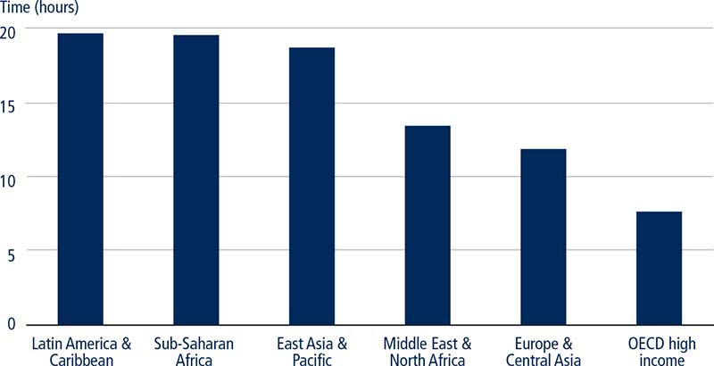
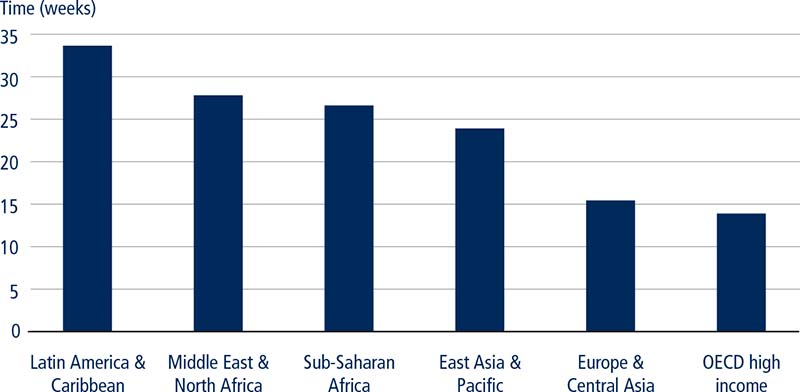
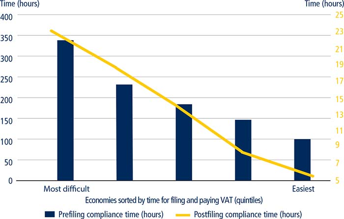
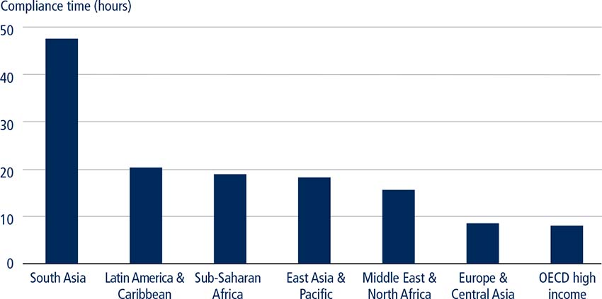
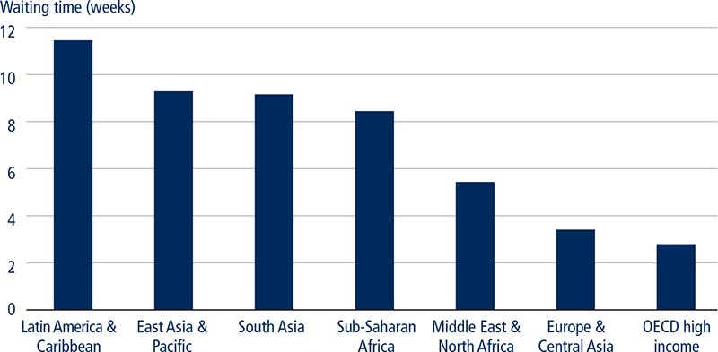
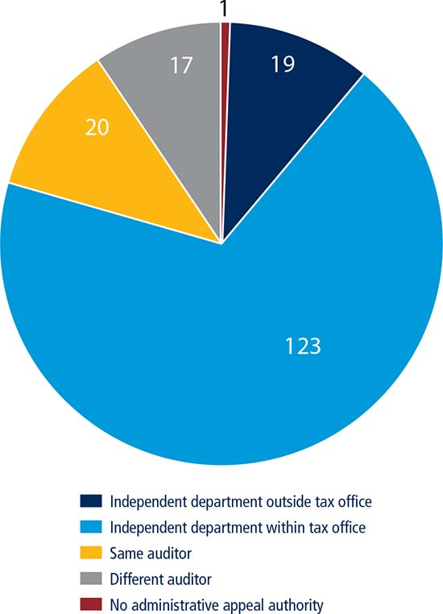

Taxes are important to the proper functioning of an economy. They are the main source of federal, state and local government revenues used to fund health care, education, public transport, unemployment benefits and pensions, among others. While the size of the tax cost imposed on businesses has implications for their ability to invest and grow, the efficiency of the tax administration system is also critical for businesses.1 A low cost of tax compliance and efficient tax-related procedures are advantageous for firms. Overly complicated tax systems are associated with high levels of tax evasion, large informal sectors, more corruption and less investment.2 Tax compliance systems should be designed so as not to discourage businesses from participating in the formal economy.
Modern tax systems seek to optimize tax collections while minimizing administrative and taxpayer compliance costs. The most cost-effective tax collection systems are those that encourage the vast majority of taxpayers to meet their tax obligations voluntarily, thereby allowing tax officials to concentrate their efforts on non-compliant taxpayers and other services provided by tax administrations.3 Taxpayers are more likely to comply voluntarily when a tax administration has established a transparent system that is regarded by taxpayers as being honest and fair.
▪ Up until Doing Business 2016, the paying taxes indicator set measured the cost of complying with tax obligations up to the filing of tax returns and the payment of taxes due. Filing the return with the tax authority, however, does not imply agreement with the final tax liability. Postfiling processes—such as claiming a value added tax (VAT) refund, undergoing a tax audit or appealing a tax assessment—can be the most challenging interactions that a business has with a tax authority. Doing Business 2017 expands the paying taxes indicators to include a new measure on postfiling.
▪ Doing Business data shows that OECD high-income economies process VAT refunds the most efficiently with an average of 14.4 weeks to reimburse the VAT refund. Economies in Europe and Central Asia also perform well with an average refund time of 16 weeks.
▪ On average, businesses spend six hours correcting an error in an income tax return and preparing any additional documents, submitting the files and making additional payment. Even following immediate voluntary notification by the taxpayer, in 74 economies an error in the income tax return is likely to trigger an audit. In 38 economies this error will lead to a comprehensive audit of the tax return.
▪ OECD high-income economies as well as Europe and Central Asia economies have the easiest and simplest processes in place to correct a minor mistake in the corporate income tax return.
▪ An internal administrative review process should be based on a transparent legal framework. This process should be independent and resolve disputes in a timely manner.
Total tax compliance costs include all major transactions that generate external costs to the taxpayer. Up until Doing Business 2016, the paying taxes indicator set measured only the cost of complying with tax obligations up until the filing of tax returns and the payment of taxes due. However, filing the tax return with the tax authority does not imply agreement with the final tax liability. Postfiling processes—such as claiming a value added tax (VAT) refund, undergoing a tax audit or appealing a tax assessment—can be the most challenging interactions that a business has with a tax authority.
Doing Business 2017 expands the paying taxes indicators to include a new measure of the time businesses spend complying with two postfiling processes: claiming a VAT refund and correcting a mistake in the corporate income tax return. This case study examines these two postfiling procedures across 190 economies and shows where postfiling processes and practices work efficiently and what drives the differences in the overall tax compliance cost across economies. This case study also includes a section on the structure of a first level administrative appeal process. The data on first level administrative appeal process is not included in the distance to frontier score for paying taxes.
The VAT refund is an integral component of a modern VAT system. In principle, the statutory incidence of VAT is on the final consumer, not on businesses. According to tax policy guidelines set out by the Organisation for Economic Co-operation and Development (OECD) a value added tax system should be neutral and efficient.4 Some businesses will incur more VAT on their purchases than they collect on their taxable sales in a given tax period and therefore should be entitled to claim the difference from the tax authorities. When businesses incur VAT which is not refunded at all—or reclaimed with delays and large compliance costs—then the principles of neutrality and efficiency are undermined. This alters the nature of VAT by effectively making it a tax on production. Any tax that cannot be recovered by the business could have a distortionary effect on market prices and competition and consequently constrain economic growth.5
Refund processes can be a major weakness of VAT systems. This was the finding of a study that examined the VAT administration refund mechanism in 36 economies around the world.6 Even in economies where refund procedures are in place, businesses often find the complexity of the process challenging. The study examined the tax authorities’ treatment of excess VAT credits, the size of refund claims, the procedures followed by refund claimants and the time needed for the tax authorities to process refunds. The results showed that statutory time limits for making refunds are crucial but often not applied in practice.
Most VAT systems allow credit to be carried-forward for a specific period of time and offset against future net liabilities to reduce the number of refunds processed. The rationale is that excess VAT credits in one tax period would be followed by periods when net liabilities would absorb the credit brought forward, especially for businesses producing and selling in the domestic market. A refund is paid only if an amount of excess credit remains to be recovered by the taxpayer at the end of the carry-forward period. Some systems also allow a VAT credit in a given tax period to be offset against other current tax liabilities such as income tax. While the option of carry-forward is allowed in most VAT systems, it is good practice for economies to put in place an adequate VAT refund system. Because considerable differences in the efficiency of processing VAT cash refunds exist between economies, the paying taxes indicators focus on assessing VAT refund systems.
The IMF’s Tax Administration Diagnostic Assessment Tool (TADAT) provides an integrated monitoring framework to measure the performance of an economy’s tax administration system across different functions, including the adequacy of its VAT refund system. It does this by measuring the time taken to pay (or offset) refunds.7
Like any tax, VAT is prone to fraud and its refund mechanism may be open to abuse by taxpayers.8 Delays in processing refunds, therefore, may be the result of concerns over potential fraud. Even when claims reach the finance division responsible for approving them and making payment, there can be delays in transmission. Additional procedural checks at this stage—prompted by a fear of the system being abused—are common.
In some economies a claim for a VAT refund can automatically trigger a costly audit, undermining the overall effectiveness of the system.9 Effective audit programs and VAT refund payment systems are inextricably linked. Tax audits (direct and indirect) vary in their scope and complexity, ranging from a full audit—which typically entails a comprehensive examination of all information relevant to the calculation of a taxpayer’s tax liability in a given period—to a limited scope audit that is restricted to specific issues on the tax return or a single issue audit that is limited to one item.10
The transactions that lead to substantial VAT refund claims typically include exports, capital expenses, extraordinary losses and startup operations.11 Through its paying taxes indicators, Doing Business measures the efficiency of VAT refunds by analyzing the case of capital expenses. The Doing Business case study company, TaxpayerCo., is a domestic business that does not participate in foreign trade. It performs a general industrial and commercial activity in the domestic market and is in its second year of operation. TaxpayerCo. meets the VAT threshold for registration and its monthly sales and monthly operating expenses are fixed throughout the year resulting in a positive output VAT payable to the tax authorities within each accounting period. The case study scenario has been expanded to include a capital purchase of a machine in the month of June; this substantial capital expenditure results in input VAT exceeding output VAT in the month of June.
In principle, when input VAT exceeds output VAT the amount should be paid as a refund to a registered business within the time period stipulated in the legislation. In practice, however, only 93 of the economies covered by Doing Business allow for a VAT cash refund in this scenario. Some economies restrict the right to receive an immediate cash refund to specific types of taxpayers such as exporters, embassies and non-profit organizations. This is the case in 43 economies including Belarus, Bolivia, Colombia, the Dominican Republic, Ecuador, Kazakhstan, Kenya, Mali and the Philippines. In Ecuador VAT refunds are limited to exporters, embassies, diplomatic missions, some specific non-government entities and international cargo companies. In Armenia cash refunds are only allowed when zero-rated VAT transactions (primarily exports) exceed 20% of all transactions.
In some economies businesses are only allowed to claim a cash refund after rolling over the excess credit for a specified period of time (for example, four months). The net VAT balance is refunded to the business only when this period ends. This is the case in 21 economies included in Doing Business.12 In Albania, Azerbaijan, Cambodia, The Gambia, Lesotho, Malawi and St. Lucia, businesses must carry forward the excess input VAT for three months before a cash refund can be given. In other economies—typically those with a weaker administrative or financial capacity to handle cash refunds—the legislation may not permit refunds outright. Instead, tax authorities require businesses to carry forward the claim and offset the excess amount against future output VAT. This is the case in Grenada, Guinea-Bissau, Sudan and República Bolivariana de Venezuela. In these two groups of economies it is common to make exceptions for exporters in relation to domestic supply. Twenty-eight economies do not levy VAT.
In 68 of the 93 economies that allow for VAT cash refunds (as in the Doing Business case scenario) the legal framework includes a time limit to repay the VAT refund starting from the moment the refund was requested. These time limits are always applied in practice in only 29 economies (21 of these economies are high-income economies). In only 28 of the 93 economies, a claim for a VAT refund does not ordinarily lead to an audit being conducted.13
In 46 economies the VAT refund due is calculated and requested within the standard VAT return, which is submitted for each accounting period and without additional work. The main purpose of filing a VAT return is to provide a summary of the output and input VAT activities that result in the net VAT payable or due (as credit or refund). For these economies the compliance time to prepare and request a VAT refund is minimal because it simply requires ticking a box. Twenty-one of these economies are OECD high-income economies. Furthermore eight of the 14 economies where taxpayers will not face an audit—and therefore will not spend additional time complying with the requirements of the auditor—are OECD high-income economies. This partly explains the average low compliance time in the region (figure 8.1).
FIGURE 8.1 Complying with VAT refund processes is most challenging in Latin America and the Caribbean, followed closely by Sub-Saharan Africa

Source: Doing Business database.
Note: South Asia is not included in the figure because VAT refunds are available in only one economy (Bangladesh).
In Germany, the Republic of Korea and the Netherlands, taxpayers request a VAT refund by simply checking a box on the standard VAT return. Taxpayers do not need to submit any additional documents to substantiate the claim and it is unlikely that this specific case study scenario of a domestic capital purchase would trigger an audit. In all three economies, the standard VAT return is submitted electronically.
However, some economies require businesses to file a separate application, letter or form for a VAT refund or to complete a specific section in the VAT return as well as to prepare some additional documentation to substantiate the claim (for example, the contract with the supplier of the machine). This is the case in Azerbaijan, Bangladesh, Costa Rica, Cyprus, Mexico, Senegal, St. Lucia and Sweden, among others. In these economies businesses spend on average 5.2 hours gathering the required information, calculating the claim and preparing the refund application and other documentation before submitting them to the relevant authority.
The requirements in these cases vary from simply completing a specific section of the standard VAT return to submitting a specific refund application. In Switzerland, for example, taxpayers would need to complete a section of the VAT return. It takes taxpayers in Switzerland 1.5 hours to gather the necessary information from internal sources and to complete the relevant section. The VAT return is submitted electronically. In Moldova, however, taxpayers must submit a specific VAT refund form and it is highly likely that a field audit would be triggered by the refund request.
A request for a VAT cash refund is likely to trigger an audit in 65 economies covered by Doing Business. As a general rule the refunds are paid upon completion of the audit and not at the end of the statutory period. This adds time and costs for businesses to comply with auditor requests and the payment of the cash refund is further delayed. Businesses in these economies spend on average 14.7 hours complying with the requirements of the auditor in terms of document preparation, engage in several rounds of interactions with the auditor that last on average 7.9 weeks and wait an additional 5.6 weeks until the final audit decision is made. Of the 65 economies, businesses are likely to undergo a field audit in 34, a correspondence audit in 22 and an office audit in nine. Businesses subjected to a field audit would spend on average an additional 7.7 hours complying with the auditor’s requirements compared to businesses subjected to a correspondence audit.
In Canada, Denmark, Estonia and Norway the request for a VAT refund is likely to trigger a correspondence audit, which requires less interaction with the auditor and less paperwork. By contrast, in most of the economies in Sub-Saharan Africa where an audit is likely to take place, taxpayers are exposed to a field audit in which the auditor visits the premises of the taxpayer. This is the case in Botswana, The Gambia, Malawi, Niger, Zambia and Zimbabwe.
The OECD high-income economies process VAT refunds most efficiently with an average of 14.4 weeks to reimburse a VAT refund (including some economies where an audit is likely to be conducted). Economies in Europe and Central Asia also perform well with an average refund processing time of 16 weeks (figure 8.2). This implies that those economies provide refunds in a manner that is less likely to expose businesses to unnecessary administrative costs and detrimental cash flow impacts.
FIGURE 8.2 The process of obtaining a VAT refund is most efficient in OECD high-income economies

Source: Doing Business database.
Note: South Asia is not included in the figure because VAT refunds are available in only one economy (Bangladesh).
From the moment a taxpayer submits a VAT refund request in Austria, it takes only one week for the tax authority to issue a refund. And it is unlikely that the request would trigger an audit. The refund is processed electronically through online banking. In Estonia, despite the fact that the claim for a VAT refund per the case scenario is highly likely to trigger a correspondence audit, the process is efficient. The VAT refund is reimbursed in 1.7 weeks on average assuming the refund is approved. This includes the time spent by the taxpayer engaging with the auditor and the time waiting until the final tax assessment is issued.
The experience in economies in other regions is less favorable. Obtaining a VAT refund in Latin America and the Caribbean takes on average 35 weeks. In the Middle East and North Africa and Sub-Saharan Africa it takes on average 28.8 and 27.5 weeks, respectively, to obtain a VAT refund. The sample for Latin America and the Caribbean includes only nine economies (the other economies do not allow for VAT cash refund per the case study scenario). The Middle East and North Africa sample consists of only six economies as most economies in the region do not levy any type of consumption tax. However, in Sub-Saharan Africa the story is different: the refund waiting time is longer because in most of the economies in the region where cash refund is allowed, taxpayers are likely to be audited before the refund is approved.
The efficiency of the VAT refund process in OECD high-income economies is partly attributable to the commitment of all OECD members to apply the OECD International VAT Guidelines.14 Furthermore, the binding nature of the 2010 European Union (EU) Directives on VAT implementation ensures that refunds are processed fully and efficiently.
A major determinant of the ability of revenue authorities to provide good standards of service for the repayment of VAT refund claims is the availability and use of modern electronic services (such as electronic filing, pre-population and direct crediting of VAT refunds). VAT refunds are paid electronically in only 30 economies covered by Doing Business. Delays in VAT refund payments may arise if, for example, the finance division that is tasked with checking and approving the claim is forced to make additional procedural checks to guard against fraud before payment is made.15
Laws provide for interest to be paid on late VAT refunds by the tax authorities in 70 economies covered by Doing Business. However, the payment of interest is always applied in practice in only 32 economies. The prescribed interest period typically begins when the tax authority fails to refund VAT within the prescribed statutory deadlines.
There is a positive correlation between the time to comply with a VAT refund process and the time to comply with filing the standard VAT return and payment of VAT liabilities (figure 8.3). This suggests that spending time up front to comply with the requirements of the tax system does not necessarily translate into an easier time postfiling. Indeed, in economies with tax systems that are more difficult to comply with when filing taxes, the entire process is more likely to be challenging.
FIGURE 8.3 Economies with complex VAT postfiling processes also tend to have high compliance times for VAT prefiling

Source: Doing Business database.
A tax audit is one of the most sensitive interactions between a taxpayer and a tax authority. Although tax audits have a role in ensuring tax compliance, they impose a burden on the taxpayer to a greater or lesser extent depending on the number and type of interactions (field visit by the auditor or office visit by the taxpayer) and the level of documentation requested by the auditor. It is therefore essential that the right legal framework is in place to ensure integrity in the way tax authorities carry out audits.16 Additionally, an audit must have defined start and end points and the taxpayer must be notified once the audit process is completed.
A risk-based approach takes into consideration different aspects of a business such as historical compliance, industry characteristics, debt-credit ratios for VAT-registered businesses and firm size. Characteristics of firms are also used to better assess which businesses are most prone to tax evasion. One study showed that data-mining techniques for auditing, regardless of the technique, captured more noncompliant taxpayers than random audits.17 In a risk-based approach the exact criteria used to capture noncompliant firms, however, should be concealed to prevent taxpayers from purposefully planning how to avoid detection and to allow for a degree of uncertainty to drive voluntary compliance.18 Most economies have risk assessment systems in place to select companies for tax audits and the basis on which these companies are selected is not disclosed. Despite being a postfiling procedure, audit strategies set by tax authorities can have a fundamental impact on the way businesses file and pay taxes.
To analyze audits of direct taxes the Doing Business case study scenario was expanded to assume that TaxpayerCo. made a simple error in the calculation of its income tax liability, leading to an incorrect corporate income tax return and consequently an underpayment of income tax liability due. TaxpayerCo. discovered the error and voluntarily notified the tax authority. In all economies that levy corporate income tax—only 10 out of 190 do not—taxpayers can notify the authorities of the error, submit an amended return and any additional documentation (typically a letter explaining the error and, in some cases, amended financial statements) and pay the difference immediately. On average, businesses spend six hours preparing the amended return and any additional documents, submitting the files and making payment. In 74 economies—even following immediate notification by the taxpayer—the error in the income tax return is likely to trigger an audit. On average taxpayers will spend 24.7 hours complying with the requirements of the auditor, spend 10.6 weeks going through several rounds of interactions with the auditor and wait 6.7 weeks for the auditor to issue the final decision on the tax assessment.
In 38 economies this error will lead to a comprehensive audit of the income tax return, requiring that additional time be spent by businesses. And in the majority of cases the auditor will visit the taxpayer’s premises. OECD high-income economies as well as Europe and Central Asia economies have the easiest and simplest processes in place to correct a minor mistake in the income tax return (figure 8.4). A mistake in the income tax return does not automatically trigger an audit by the tax authorities in 25 OECD high-income economies. Taxpayers need only to submit an amended return and, in some cases, additional documentation and pay the difference in balance of tax due. In Latin America and the Caribbean taxpayers suffer the most from a lengthy process to correct a minor mistake in an income tax return. In most cases this process will involve an audit imposing a waiting time on taxpayers until the final assessment is issued (figure 8.5).
FIGURE 8.4 Correcting an income tax return is easiest in OECD high-income economies, followed closely by Europe and Central Asia economies

Source: Doing Business database.
FIGURE 8.5 The audit time resulting from a simple mistake in an income tax return is the longest in Latin America and the Caribbean

Source: Doing Business database.
In Portugal and Estonia, taxpayers must only submit an amended tax return and make the necessary payment at the moment of submission. It takes taxpayers half an hour to prepare the amended return and another half an hour to submit it electronically. The payment is also made online. In these economies, the case study scenario of a minor mistake in the income tax return is not likely to trigger an audit. In New Zealand, taxpayers must submit a specific voluntary disclosure form—which takes on average three hours to prepare—with the submission and payment being made electronically. Similarly, taxpayers are unlikely to be exposed to an audit in the case measured in Doing Business.
In Brazil, Honduras, Nicaragua and Peru the fact that taxpayers erroneously declared and underpaid their income tax liability would likely trigger a field audit by the tax authorities. In Peru taxpayers will undergo a comprehensive audit of all items on the income tax return, requiring interaction with the auditor for around six weeks and waiting an additional seven weeks for the auditor to issue the final assessment.
Tax disputes are common in any tax system. Disputes between a tax authority and taxpayers must be resolved in a fair, timely and efficient manner.19 In the first instance, taxpayers should attempt to settle their final tax assessment with the tax authority. If a dispute continues, however, taxpayers should have the opportunity—within a prescribed period of time—to seek resolution from a special administrative appeal board or department. The creation of boards of appeal within tax administrations is considered by the OECD as an effective tool for addressing and resolving complaints and avoiding the overburdening of the courts.20 A serious backlog of tax cases threatens revenue collection.21
Resolving tax disputes in a way that is independent, fast and fair is important. The IMF’s TADAT tool also assesses the adequacy of tax dispute resolution by looking at whether an appropriately graduated mechanism of administrative and judicial review is available, whether the administrative review mechanism is independent of the audit process and whether information on the appeal process is published. An internal administrative review process must safeguard a taxpayer’s right to challenge an assessment resulting from a tax audit. The process should be based on a legal framework that is known by taxpayers, is easily accessible and independent and resolves disputed matters in a timely manner. Internal reviews can be achieved through a separate appeals division, a senior official that does not directly supervise the original case auditor or a new auditor with no previous knowledge of the case. Operational manuals should be developed, decisions should be published and annual appeal statistics should be reported—helping to create a positive public perception of the tax administration’s integrity.
Through the paying taxes indicators, Doing Business conducts research on what kind of first level administrative appeal process exists in an economy following a corporate income tax audit where a taxpayer disagrees with the tax authority’s final decision. The data on first level administrative appeal process are not included in the distance to frontier score for paying taxes. In 123 economies the first level administrative appeal authority is an independent department within the tax office (figure 8.6).
FIGURE 8.6 Most economies have an independent department within the tax office for taxpayer appeals

Source: Doing Business database.
Appeal guidelines are available to taxpayers either through a printed publication, online or in person at the tax office in the 171 of the 180 economies covered by Doing Business that levy corporate income tax. In 102 economies the legal framework imposes timeframes on the taxpayer and the appeal authority for each stage of the appeal process. In only 47 economies, however, respondents reported that the time limits are consistently applied in practice.
In Chile a taxpayer can appeal to the regional director of the Chilean Internal Revenue Service (SII) following a corporate income tax audit where the taxpayer disagrees with the tax authority’s final decision. Guidelines on how to appeal the decision and the timeframe to conclude the process are easily accessible to the public through the SII’s website. By law, the Chilean Tax Code sets a time limit of 50 days for the SII’s regional director to issue a decision on the appeal. This time limit is applied in practice.
Little is known about the tax compliance cost of postfiling procedures. This analysis is therefore intended to generate new research to better understand firms’ decisions and the dynamics in developing economies, to highlight which processes and practices work—and which do not—and, eventually, to induce governments to reform and enhance their postfiling processes.
The new indicator on the adequacy of postfiling processes provides policy makers who are dealing with the challenge of designing an optimal tax system with a broader dataset that allows them to benchmark their economy against others on the administrative burden of complying with postfiling procedures.
This case study was written by Emily Jane Bourke, Joanna Nasr, Nadia Novik and Rodrigo A. Sarmento de Beires.
1. For more on the World Bank Enterprise Surveys, see the website at http://www.enterprisesurveys.org.
2. Djankov and others 2010.
3. IMF 2015a.
4. OECD 2014c.
5. OECD 2014c.
6. Harrison and Krelove 2005.
7. For more information on the Tax Administration Diagnostic Assessment Tool (TADAT), see the website at http://www.tadat.org/.
8. Keen and Smith 2007.
9. Harrison and Krelove 2005.
10. OECD 2006a.
11. The key point for exports is that the supplies are taxable but zero-rated as they are taxed at the destination economy leading to input VAT being offset against zero output VAT. The notion of claiming a VAT refund immediately for substantial capital expenditure in an accounting period is that the recoverable amount of input VAT in that period could be large and result in excess input tax credit or a refund claim for the period. Extraordinary events—such as fire, flood or seasonal trends—may lower sales activities over periods of time or even halt sales while the business continues filing regular VAT returns. Lastly, new businesses would register for VAT based on the sales that they expect to make even before they start making actual sales. This means that new businesses could offset input VAT on start-up expenses against a minimal output VAT, resulting in a VAT refund claim.
12. These economies are Albania; Antigua and Barbuda; Azerbaijan; Bulgaria; Cambodia; Dominica; The Gambia; Guyana; Jordan; Kiribati; Lesotho; Malawi; Nepal; Pakistan; Seychelles; St. Kitts and Nevis; St. Lucia; Tanzania; Tonga; Tunisia; and Vietnam.
13. These economies are Austria; Barbados; Belize; Costa Rica; Croatia; Cyprus; Ethiopia; Finland; France; Germany; the Islamic Republic of Iran; Ireland; the Republic of Korea; Latvia; Lithuania; Malta; Netherlands; New Zealand; Papua New Guinea; Portugal; Samoa; Seychelles; Slovenia; Spain; Sweden; Switzerland; Taiwan, China; and the Republic of Yemen.
14. OECD 2014c.
15. Child 2008.
16. OECD 2006a.
17. Gupta and Nagadevara 2007.
18. Alm and McKee 2006; Khwaja, Awasthi and Loeprick 2011.
19. Thuronyi 2003.
20. OECD 2010.
21. Gordon 1996.